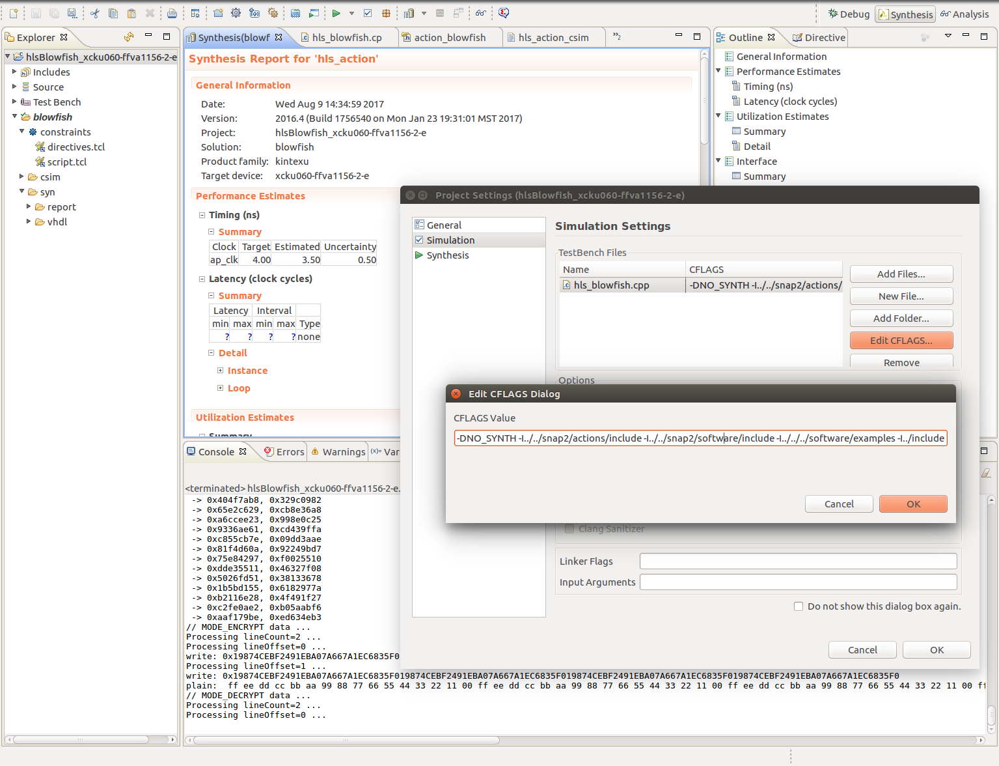
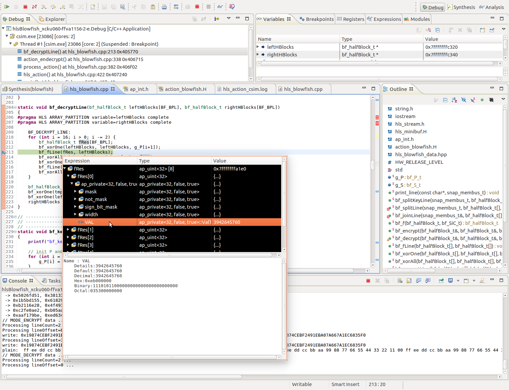

Hardware Development
As mentioned earlier, SNAP supports hardware development with Vivado HLS, that translates C/C++ code to VHDL or Verilog. Subsequently both the translation tool and the C/C++ subset it can translate will be called HLS.
The HLS translation process tries to group the original sequential statements into groups, that can be executed in parallel. This involves tracing the control and data dependencies between those statements. The groups of parallel statements become states of a state machine and its transitions are determined according to the control structures in the original code. This state machine controls a data path that is capable of executing all required operations defined by the original statements. Consequently, the resulting synchronous hardware design implements the same functionality as the original code. This enables software developers to quickly port existing algorithms to a hardware implementation without in-depth knowledge of traditional hardware development principles.
For some easily parallelizable algorithms the results of this process might be good enough to achieve substantial speedups, as HLS recognizes the optimization potential and generates parallel hardware. In the general case however, the formulation of an algorithm that is optimized for a sequential execution model is not a favorable candidate for automatic optimization: HLS has hardly the same domain knowledge of a hardware developer, who knows (or guesses) how best to restructure the algorithm to distribute the workload well among the available resources.
Therefore HLS provides a set of annotations (#pragma HLS ...) that allow a developer to direct the hardware generation process in specific ways to give a more fine grained control over the generated hardware. In some specific cases it might even be necessary to restructure the C code by hand in order to make HLS generate the intended hardware structures.
A basic SNAP AFU project consists of two files in the hardware (hw) subdirectory of the action repository: One hardware specific header file, and the C implementation. In our case these are action_blowfish.H and hls_blowfish.cpp. Note the capital H in the header file extension. This convention is used to distinguish the hardware specific from the common header file action_blowfish.h. The latter contains the definition of the job structure and is thus included in both the hardware and software implementation.
Porting the Algorithm to HLS
The first step of the AFU development is the implementation of the actual algorithm in HLS. Depending on the style and complexity of an existing software implementation, it might be more or less easy to adapt it to the limitations of HLS' subset of C/C++: Dynamic memory allocation and some pointer operations are not supported and algorithms relying on dynamic data structures need to be reorganized to fit into the more static nature of a hardware implementation.
Blowfish however operates on blocks of a fixed size and needs only a fixed set of intermediate results, which makes the port to hardware easy. The Wikipedia article provides a compact pseudocode representation, that needs only minor adaptions to serve as a first step to the AFU implementation:
static bf_halfBlock_t bf_f(bf_halfBlock_t h)
{
bf_SiE_t a = (bf_SiE_t)(h >> 24),
b = (bf_SiE_t)(h >> 16),
c = (bf_SiE_t)(h >> 8),
d = (bf_SiE_t) h;
return ((g_S[0][a] + g_S[1][b]) ^ g_S[2][c]) + g_S[3][d];
}
static void bf_encrypt(bf_halfBlock_t & left, bf_halfBlock_t & right)
{
for (bf_PiE_t i = 0; i < 16; i += 2) {
left ^= g_P[i];
right ^= bf_f(left, iCpy);
right ^= g_P[i+1];
left ^= bf_f(right, iCpy);
}
bf_halfBlock_t tmp = left ^ g_P[16];
left = right ^ g_P[17];
right = tmp;
}
static void bf_decrypt(bf_halfBlock_t & left, bf_halfBlock_t & right, bf_SiC_t iCpy)
{
for (bf_PiE_t i = 16; i > 0; i -= 2) {
left ^= g_P[i+1];
right ^= bf_f(left, iCpy);
right ^= g_P[i];
left ^= bf_f(right, iCpy);
}
bf_halfBlock_t tmp = left ^g_P[1];
left = right ^ g_P[0];
right = tmp;
}
static void bf_keyInit(bf_halfBlock_t key[18])
{
for (bf_PiE_t i = 0; i < 18; ++i) {
g_P[i] = c_initP[i] ^ key[i];
}
for (bf_SiA_t n = 0; n < 4; ++n) {
for (bf_SiE_t i = 0; i < 256; ++i) {
g_S[n][i] = c_initS[n][i];
}
}
bf_halfBlock_t left = 0, right = 0;
for (bf_PiE_t i = 0; i < 18; i += 2) {
bf_encrypt(left, right, 0);
g_P[i] = left;
g_P[i+1] = right;
}
for (bf_SiA_t n = 0; n < 4; ++n) {
for (bf_SiE_t i = 0; i < 256; i += 2) {
bf_encrypt(left, right, 0);
g_S[n][i] = left;
g_S[n][i+1] = right;
}
}
}
When porting pseudocode or existing C code to HLS, care should be taken when choosing data types: In software development it does not usually make a difference in terms of performance, if much wider data types than necessary are used, provided they do not exceed the underlying machine's native register width. When specifying hardware however, a data type's bit width has a significant impact on the size and performance of a design.
The generated hardware is exactly large enough to process the specified bit count. During the translation process it is generally impossible to determine the range of values a variable might take at runtime so that the worst case must be assumed. Therefore it is advisable to specify the bit width of a variable as tightly as possible. To enable a finer control, the template types ap_uint and ap_int can be parameterized to represent any integral bit width.
This can be seen in the code above. Instead of using the usual int for loop counters, specific types such as bf_SiE were selected, that are defined in the hardware specific header.
Test Bench I
The hardware implementation (hls_blowfish.cpp) can define a main() function, that should be non-synthesizable. It will be the entry point for debugging and should contain a testbench for the HLS code.
In a later stage of the development, the test bench will set up a complete SNAP environment to execute the AFU code in software just as if it was invoked in hardware. For now it is sufficient to write test cases for the algorithm to debug the implementation and ensure its correctness before the SNAP integration can begin. The example below shows how the encrypt function could be tested.
#ifdef NO_SYNTH
int main()
{
bf_halfBlock_t left = 0xda7a, right = 0xb10c;
printf("encrypt(0x%08x, 0x%08x) -> ", left, right);
bf_encrypt(left, right);
printf("0x%08x, 0x%08x\n", left, right);
}
#endif
The Vivado HLS IDE is used to run such a test bench. Once installed it should be started from a shell with all SNAP environment variables set up. The project to be opened is the directory in ${ACTION_ROOT}/hw that contains an FPGA part number in its name. In this case it would be ${SNAP_ROOT}/actions/hls_blowfish/hw/hlsBlowfish_xcku060-ffva1156-2-e.

Vivado HLS: Synthesis View and Project Settings Dialog
Before running the testbench, the hardware source file hls_blowfish.cpp must be added as a simulation source, by right clicking Test Bench in the project explorer and selecting Add Files... . Furthermore some SNAP specific CFLAGS must be set up by opening the Project -> Project Settings dialog and editing the CFLAGS of the hls_blowfish.cpp file in the Simulation Tab. The flags to use are documented in the SNAP Action Readme on GitHub. At the time of writing the required flags were:
-DNO_SYNTH -I./include -I../../software/include -I./<action_directory>/include
Afterwards by pressing the Run C Simulation icon in the toolbar the simulation will be started and the Debug view entered, where the usual functionality of a C debugger is available.

Vivado HLS: Debug View and Simulation in Progress
Integration with the SNAP Framework
The next step on the way to a working Blowfish-AFU is to adapt its structure to the SNAP framework. SNAP expects a module named hls_action and instantiates it as the AFU user design when composing the final design on the FPGA.
HLS translates all functions to separate VHDL modules unless they are inlined. Consequently the AFU code must contain a function named hls_action() that will be the entry point to the AFU logic.
The arguments of this function represent different parts of the environment that SNAP offers to an AFU: They include pointers to host memory, a pointer to the job structure and if enabled a pointer to the cards local memory. (See USE_DRAM=TRUE with make config). hls_action() is called each time the job interface of the PSL indicates that a job should be started.
All AFUs must be able to introduce themselves to the host with their action code and hardware revision. There is a list of assigned action codes in the SNAP repository named ActionTypes.md. A new action code is registered by a successful merge request that adds the new assignment to that list. There is however a large range of codes reserved for experimental use which - though with the risk of collisions - should be ideal for the private development of a new AFU. The hardware revision is at the discretion of the developer and should only be increased if significant changes in the host visible AFU interface or behavior have occurred.
If the host queries this information, hls_action() is entered just as if a regular job was started. To distinguish both cases, a flag in the control register is set to indicate that instead of executing a job the AFU should write the respective entries in a configuration memory space, accessible through a pointer argument to hls_action().
The specific code that implements this behavior can be seen below and - as it is not specific to a particular AFU - can be freely reused.
void hls_action(snap_membus_t *din_gmem, snap_membus_t *dout_gmem,
action_reg *action_reg, action_RO_config_reg *Action_Config)
{
// Host Memory AXI Interface
#pragma HLS INTERFACE m_axi port=din_gmem bundle=host_mem offset=slave depth=512
#pragma HLS INTERFACE m_axi port=dout_gmem bundle=host_mem offset=slave depth=512
#pragma HLS INTERFACE s_axilite port=din_gmem bundle=ctrl_reg offset=0x030
#pragma HLS INTERFACE s_axilite port=dout_gmem bundle=ctrl_reg offset=0x040
// Host Memory AXI Lite Master Interface
#pragma HLS DATA_PACK variable=Action_Config
#pragma HLS INTERFACE s_axilite port=Action_Config bundle=ctrl_reg offset=0x010
#pragma HLS DATA_PACK variable=action_reg
#pragma HLS INTERFACE s_axilite port=action_reg bundle=ctrl_reg offset=0x100
#pragma HLS INTERFACE s_axilite port=return bundle=ctrl_reg
/* Required Action Type Detection */
switch (action_reg->Control.flags) {
case 0:
Action_Config->action_type = (snapu32_t)BLOWFISH_ACTION_TYPE;
Action_Config->release_level = (snapu32_t)HW_RELEASE_LEVEL;
action_reg->Control.Retc = (snapu32_t)0xe00f;
break;
default:
action_reg->Control.Retc = process_action(din_gmem, dout_gmem, action_reg);
break;
}
}
Excerpt of hls_blowfish.cpp
To separate this mechanism from the actual logic, the Blowfish AFU calls process_action() if the hls_action() invocation was not a configuration request. This function is the first AFU specific part and the right place to extract all necessary parameters and commands from the job structure. This is accessible via the action_reg * act_reg parameter. It contains the general AFU control registers in act_reg->Control and the AFU specific job struct in its act_reg->Data member, which is organized as specified in the common action_blowfish.h header.
When using members of the type struct snap_addr care should be taken, as they not only include the actual address, but only fields for the length of the specified address range, the type of memory referenced and some flags intended for later use in the SNAP framework.
The Blowfish example uses only the address part of this struct and thus the job struct decoding looks as follows:
snapu64_t inAddr = action_reg->Data.input_data.addr;
snapu64_t outAddr = action_reg->Data.output_data.addr;
snapu32_t byteCount = action_reg->Data.data_length;
snapu32_t mode = action_reg->Data.mode;
Excerpt of hls_blowfish.cpp process_action()
The Blowfish AFU provides three separate operations: Encryption, decryption and key initialization. They are distinguished by specific values of the mode field and use the input and output buffers if applicable. To maintain a clear structure, the operations are implemented in separate functions: action_setkey() performs the key initialization, whereas action_endecrypt() handles both en- and decryption as they are very similar. These functions contain the required memory access logic to execute the Blowfish algorithm consisting of the bf_*() functions efficiently.
Test Bench II
With the SNAP action code in place, the testbench should be changed accordingly, to call hls_action() with a correctly set up environment. This includes arrays of the snap_membus_t type for each bus that is connected to the action module, i.e. two buses to host memory and optionally one to the DRAM, as well as the action and config registers (action_reg and act_R0_config_reg). The memory arrays must be initialized to contain the data, on which the action will operate. The action register must contain a correctly initialized job structure. The config register contains the flag to distinguish discovery from normal mode and this flag is the only part that needs to be set for test bench purposes.
With all these preparations in place hls_action() can be called so that all parts of the action functionality are covered by the test bench. Should that produce incorrect results, breakpoints and variable inspection are effective means to find the bug.
void main()
{
static snap_membus_t din_gmem[1024];
static snap_membus_t dout_gmem[1024];
action_reg act_reg;
action_RO_config_reg act_config;
static const uint8_t ptext[] = { /* ... */ };
static const uint8_t key[] = { /* ... */ };
// Perform Action Discovery
act_reg.Control.flags = 0x0;
hls_action(din_gmem, dout_gmem, &act_reg, &act_config);
// Setup memory
memcpy((uint8_t *)(void *)&din_gmem[0], key, sizeof(key)); // key 8B @ 0x0
memcpy((uint8_t *)(void *)&din_gmem[2], ptext, sizeof(ptext)); // plaintext 16B @ 0x80
// Test Key Initialization
act_reg.Control.flags = 0x1;
act_reg.Data.input_data.addr = 0;
act_reg.Data.data_length = 8;
act_reg.Data.mode = MODE_SET_KEY;
hls_action(din_gmem, dout_gmem, &act_reg, &act_config);
// Test Encryption
act_reg.Control.flags = 0x1;
act_reg.Data.input_data.addr = 2 * sizeof(snap_membus_t);
act_reg.Data.output_data.addr = 4 * sizeof(snap_membus_t);
act_reg.Data.data_length = sizeof(ptext);
act_reg.Data.mode = MODE_ENCRYPT;
hls_action(din_gmem, dout_gmem, &act_reg, &act_config);
}
Excerpt of hls_blowfish.cpp
Using the SNAP Environment
With the memory and register pointers passed to hls_action() SNAP already provides everything to access the resources available to an AFU. By dereferencing and using pointer arithmetic, different memory areas can be read and written. After the job structure pointer, that translates to an interface to a job management module provided by SNAP, the most interesting resource to any AFU will be host memory.
When interacting with host memory, there arises a slight incongruity: While a regular bus interface can be expected to be bidirectional, SNAP provides two separate interfaces for host memory access, one for read and one for write operations. This is due to the way Vivado HLS translates bus interfaces, which is not quite compatible with SNAPs PSL interface module.
snap_membus_t result = din_gmem[address >> ADDR_RIGHT_SHIFT];
The statement above performs a single read operation from host memory. The result is a snap_membus_t which represents one word with the native bus width of the underlying PSL interface. The bus width is 512 bit, so only 64 byte aligned accesses to 64 byte blocks of data are possible. The addresses specified by the host software will generally be byte addresses, while the host memory pointer is indexed in multiples of 64 bytes. That necessitates the right shift of the byte address. Care should be taken if the lower bits of the byte address are not 0. In that case the desired part must be extracted from the result according to those lower bits.